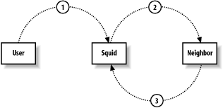

第10章 与其他Squid会话
10.1 某些术语
通常把一组互相转发请求的cache（或代理）叫做cache堆叠。把cache堆叠的成员叫做邻居或对等伙伴
。邻居cache有2种关系：父子或姐妹。从拓扑上看，父cache在堆叠里位于顶层，而姐妹cache位于同一层。两者真正的不同在于，父cache能为子cache转发cache丢失，然而姐妹cache之间不允许转发cache丢失。这意味着，在发送请求到姐妹cache前，发起者应该知道这是个cache命中。类似于ICP,HTCP和Cache Digests之类的堆叠协议，能预知邻居的cache命中。然而CARP不能这样。
某些时候，cache堆叠并非真正层次性的。例如，考虑1组5个姐妹cache。因为它们没有父子关系，故而不存在上或下。在这种情况下，你可以叫它cache结网，或甚至cache编队，而不是堆叠。
10.2 为何要（或不要）使用堆叠？
邻居cache通过提供某些额外的cache命中而改进了执行性能。换句话说，某些请求的cache丢失，在邻居cache里可能会命中。假如你的cache从邻居cache里下载这些命中，比从原始服务器快，那cache堆叠可全面改善性能。底线是邻居cache能提供一小部分的请求命中。大约5%或10%（假如幸运的话）的cache丢失请求，会在邻居cache中命中。在某些情况下，这点小作用价值不高。然而有的情形下，例如网络连接不尽人意时，cache堆叠非常明显的改进了终端用户的访问性能。
假如在有防火墙的网络中使用squid，就有必要配置防火墙作为父代理。在该情形中，squid转发每个请求到防火墙，因为它不直接连接到外部原始服务器。假如有某些原始服务器在防火墙里面，就可以配置squid直接连接到它们。
也可以使用堆叠来在不同方向上传送web数据。这点有时候叫做应用层路由，或更近的叫法：内容路由。例如，考虑某个大公司，它有2个Internet连接。也许第二个连接比第一个成本更低。该公司可能想利用第二个连接作为次优先性传输，例如下载游戏、音频或视频，或其他形式的大文件传输。或者，也许他们想利用某条链路进行HTTP访问，而在另一条链路上进行非HTTP访问。再或者，也许某些用户的数据通过低优先级链路传输，而付费用户的数据通过更贵的链路传输。可以使用cache代理堆叠来完成上述设想。
信任机制对cache堆叠来说，是最重要的因素。你必须信任邻居cache会服务正确的、未修改的响应。必须在敏感信息上信任它们，例如用户请求的URI。
它们会维护一个安全的，不断更新的系统，将未授权访问和拒绝服务的机会降至最低。关于堆叠的另一个问题，在于它们正常传播错误的途径。当邻居cache经历了某个错误，例如服务不可到达，它产生一个HTML页面来解释该错误及错误源头。假如邻居cache位于公司之外，它返回错误时，用户会觉得迷惑。假如该问题继续，用户将很难找到帮它们解决问题的管理员。
姐妹关系也有一个已知的问题，叫做假命中。假如squid发送某个请求到它的姐妹，它认为这是个cache命中，然而它的姐妹没有联系过原始服务器，因此不能满足该请求，这时就会发生假命中。有很多情况导致假命中，但通常可能性很低。甚至，squid和其他HTTP代理有自动重新请求假命中的功能，不会让用户感觉到已发生的问题。
转发循环有时候是cache堆叠的另一个问题。当squid转发某个请求到某处，但该请求又被转发回squid，这就发生了转发循环。请见图10-1（略图）。
Figure 10-1. A forwarding loop
转发循环典型的发生在2个cache互相把对方当作父cache的情况。假如你遇到这样的问题，请确认使用cache_peer_access指令来阻止这类循环。例如，假如邻居cache的IP地址是192.168.1.1，下面的行让squid不会产生转发循环：
acl FromNeighbor src 192.168.1.1
cache_peer_access the.neighbor.name deny FromNeighbor
转发循环在HTTP拦截里也能发生，特别是当拦截设备位于squid和原始服务器之间的路径上时。
Squid通过检查Via头部里的主机名，来检测转发循环。假如2个协作cache有相同的主机名，实际上就会得到假转发循环。在该情形下，unique_hostname指令很有用。注意，假如Via头部被过滤掉了（例如使用headers_access指令），squid就不能检测到转发循环。
10.3 配置Squid与邻居通信
cache_peer指令定义邻居cache，并告诉squid如何与它的邻居通信：
cache_peer hostname type http-port icp-port [options]
第1个参数是邻居的主机名，或IP地址。可以安全的在这里使用主机名，因为squid会解析它们。在squid运行期间，主机名对应的IP地址可能会改变，所以实际上squid会周期性的解析主机名。邻居主机名必须唯一：不能在2个邻居cache上使用同样的主机名，即使它们有不同的端口。
第2个参数指定邻居cache的类型。有3个选择：父亲，姐妹，或广播。父亲和姐妹关系容易理解。我在10.6.3节里会详细谈到广播。
第3个参数是邻居HTTP端口号。它应该等同于邻居的http_port设置。总是应该指定1个非零的HTTP端口号。
第4个参数指定ICP或HTCP端口号。squid默认使用ICP来查询其他cache。也就是说，squid发送ICP查询到邻居cache的指定端口。假如你增加了htcp选项，squid就会发送HTCP查询到这个端口。默认的ICP端口是3130，默认的HTCP端口是4827。假如增加了htcp选项，请记得改变它的端口号。将端口号设为0，会禁止ICP和HTCP。然而，应该使用no-query选项来禁止这些协议。
10.3.1 cache_peer选项
cache_peer指令有很多选项。我在这里描述其中的一些，其他的参数在与之相关的协议的章节里有描述。
proxy-only
该选项指示squid不存储它接受自邻居的任何响应。如果你有cache集群，并且不希望资源存储在多个cache上，那么该选项有用。
weight=n
该选项指定给ICP/HTCP。请见10.6.2.1章节。
ttl=n
该选项指定给广播ICP。见10.6.3节。
no-query
该选项指定给ICP/HTCP。见10.6.2.1节。
default
在缺少其他线索时，该选项指定邻居cache作为适当的选择。正常情况下，squid将cache丢失转发给父cache，父cache看起来有特定资源的缓存拷贝。有时候squid没有任何线索（例如使用no-query禁用了ICP/HTCP），这时squid会寻找父cache，并将其作为默认选择。
round-robin
该选项是简单的负载共享技术。仅仅当你指定了2个或多个父cache作为轮转时，它才有用。squid对每个父cache维持一个计数器。当需要转发cache丢失时，squid选择计数器值最低的父cache。
multicast-responder
该选项指定给广播ICP。见10.6.3节。
closest-only
该选项指定给ICP/HTCP。见10.6.2.1节。
no-digest
该选项指定给cache digest，见10.7章。
no-netdb-exchange
该选项告诉squid，不要请求邻居cache的netdb数据库（见10.5节）。
no-delay
该选项告诉squid，忽略任何对邻居cache请求的延迟池设置。见附录C关于延迟池的更多信息。
login= credentials
该选项指示squid发送HTTP验证信息到邻居cache。它有3个不同的格式：
login =user:password
这是最通用的形式。它导致squid在每个到邻居cache的请求里，增加相同的用户名和密码。用户无须填写任何验证信息。
login=PASS
将值设为PASS，导致squid让用户的验证信息直接pass到邻居cache。它仅仅工作在HTTP基础的验证机制下。squid不会增加或修改任何验证信息。
假如squid被配置成需要代理验证（例如使用proxy_auth ACL），邻居cache就必须使用同样的用户名和密码数据库。换句话说，应该只在被同一组织拥有和操作的一组cache中使用PASS形式。该功能是危险的，因为squid不会从转发请求里移除验证信息。
login =* :password
使用该形式，squid改变它转发的请求里的密码，但不改变用户名。它允许邻居cache来验证独立的用户，但不暴露其密码。该形式比使用PASS危险少一些，但确实有一些隐私牵连。
使用该功能需要额外小心。即使你不管隐私条目，该功能也可能对上级代理产生不良的副作用。例如，我知道至少1个其他的cache产品，它仅仅查看持续连接里第一个请求的信用信息。它看起来（不正确的）假设在单个连接里的所有请求，都来自同一用户。
connect-timeout= n
该选项指定，在squid建立TCP连接到邻居cache时，等待的超时时间。若没有该选项，超时值就取自全局connect_timeout指令，它的默认值是120秒。使用低的超时值，squid会迅速放弃到邻居cache的会话，并且试着发送请求到其他邻居cache，或直接请求原始服务器。
digest-url= url
该选项指定给cache digest。见10.7章。
allow-miss
该选项指示squid忽略Cache-Control: only-if-cached指令，该指令是针对发送给姐妹cache的请求的。仅在如下情况下使用它：邻居cache激活了icp_hit_stale指令，并且没有使用miss_access列表。
max-conn= n
该选项对squid打开到邻居cache的同时连接的数量进行限制。当抵达了该限制时，squid从它的选择算法里排除掉该邻居cache。
htcp
该选项指定邻居cache为HTCP服务器。换句话说，squid发送HTCP查询，而不是ICP查询，到邻居cache。注意squid不会在同一端口上接受ICP和HTCP查询。若你增加了该选项，不要忘了改变icp-port的值。见10.8.1节。HTCP支持需要在运行./configure时，使用--enable-htcp选项。
carp-load-factor= f
该选项让邻居cache（它必须是父cache）成为CARP的成员。对所有父cache的f值的总和，必须等于1。我在10.9章里讲到CARP。CARP支持需要在运行./configure时，使用--enable-carp选项。
10.3.2 邻居状态
Squid对其每个邻居cache，维持着多种统计和状态信息。最重要的信息之一，是其邻居cache的存活状态。邻居cache的存活/死亡状态影响了squid选择算法的许多方面。确定邻居cache的存活/死亡状态的机制有点复杂，所以我在这里不讲它。假如你想通过阅读源代码来了解这点，请查看neighborUp()函数。
Squid使用TCP(HTTP)和UDP(ICP/HTCP)通讯来确定邻居cache的状态。TCP状态默认是存活的，但如果连续10个TCP连接失败，状态会改变为死亡。如果发生这种事，squid会发起探查连接，在每个connect_timeout期间内（全局指令，并非cache_peer选项），连接不会超过1次。邻居cache会保持死亡状态，直到探查连接之一成功。
假如no-query选项没有设置（意味着squid正发送ICP/HTCP查询到邻居cache），UDP层通讯也参与到存活/死亡算法里来。UDP状态默认是存活的，但假如squid在超时范围内（dead_peer_timeout指令的值），没有接受到任何ICP/HTCP响应，UDP状态就会改变为死亡。
假如邻居cache的主机名不可解析，squid也会将其标记为死亡。当squid确定其邻居cache死亡时，它在cache.log里增加类似如下的日志记录：
2003/09/29 01:13:46| Detected DEAD Sibling: bo2.us.ircache.net/3128/3130
当与邻居cache的通信重新建立起来时，squid记录类似如下的日志：
2003/09/29 01:13:49| Detected REVIVED Sibling: bo2.us.ircache.net/3128/3130
邻居cache的状态，在下述几个方面影响邻居选择算法：
- 1)Squid不希望接受来自死亡邻居的ICP/HTCP响应。squid在每个dead_peer_timeout期间内，只发送1次ICP查询到死亡的邻居。见附录A。
- 2)死亡的父cache从下列算法里排除掉:Digests, round-robin parent, first up parent, default
parent, 和closest parent。
- 3)CARP特殊：任何失败的TCP连接，会从CARP算法里排除掉父cache。
没有办法强迫squid发送HTTP请求到死亡的邻居cache。假如所有的邻居cache都死亡，squid会试图连接到原始服务器。假如你不允许squid与原始服务器会话（使用never_direct指令），squid会返回cannot forward的错误消息：
This request could not be forwarded to the origin server or to any
parent caches. The most likely cause for this error is that:
* The cache administrator does not
allow this cache to make direct connections to origin servers, and * All configured
parent caches are currently unreachable 10.3.3 改变关系
neighbor_type_domain指令允许你改变与基于原始服务器主机名的邻居cache的关系。假如邻居cache期望服务任何请求的cache命中，但仅仅服务某些临近域的cache丢失，那么这个指令就很有用。语法是：
neighbor_type_domain neighbor.host.name relationship [!]domain ...
例如：
cache_peer squid.uk.web-cache.net sibling 3128 3130
neighbor_type_domain squid.uk.web-cache.net parent .uk
当然，该示例里的squid.uk.web-cache.net缓存，会利用相应的miss_access规则来强迫姐妹关系给non-UK请求。注意域名会按照6.1.1.2章节里描述的那样，匹配主机名。
10.4 对邻居的请求限制
许多使用cache堆叠的用户，想控制或限制squid发送到邻居cache的请求。squid有7个不同的指令可以影响请求路由：cache_peer_access, cache_peer_domain, never_direct, always_direct, hierarchy_stoplist,nonhierarchical_direct, 和prefer_direct。
10.4.1 cache_peer_access
cache_peer_access指令定义对邻居cache的访问列表。也就是说，它决定哪个请求允许或不允许发送到邻居cache。
例如，可以使用这点来对FTP和HTTP请求进行分流。你可以发送所有的FTP URI到某个父cache，所有的HTTP URI到另一个父cache：
cache_peer A-parent.my.org parent 3128 3130
cache_peer B-parent.my.org parent 3128 3130
acl FTP proto FTP
acl HTTP proto HTTP
cache_peer_access A-parent allow FTP
cache_peer_access B-parent allow HTTP改配置确保父cache A仅接受FTP URI请求，而父cache B仅接受HTTP URI请求。当然也包括ICP/HTCP请求。
也可以使用cache_peer_access，在一天中的某段时间来激活或禁止邻居cache：
cache_peer A-parent.my.org parent 3128 3130
acl DayTime time 07:00-18:00
cache_peer_access A-parent.my.org deny DayTime10.4.2 cache_peer_domain
cache_peer_domain指令是cache_peer_access指令的早期形式。相对于使用完整的访问控制特性，它仅使用URI里的域名。它常用于通过域名区分一组父cache。例如，假如你有一个遍布全球的内部网，你也许想发送请求到位于各自大陆的cache：
cache_peer europe-cache.my.org parent 3128 3130
cache_peer asia-cache.my.org parent 3128 3130
cache_peer aust-cache.my.org parent 3128 3130
cache_peer africa-cache.my.org parent 3128 3130
cache_peer na-cache.my.org parent 3128 313
cache_peer sa-cache.my.org parent 3128 3130
cache_peer_domain europe-cache.my.org parent .ch .dk .fr .uk .nl .de .fi ...
cache_peer_domain asia-cache.my.org parent .jp .kr .cn .sg .tw .vn .hk ...
cache_peer_domain aust-cache.my.org parent .nz .au .aq ...
cache_peer_domain africa-cache.my.org parent .dz .ly .ke .mz .ma .mg ...
cache_peer_domain na-cache.my.org parent .mx .ca .us ...
cache_peer_domain sa-cache.my.org parent .br .cl .ar .co .ve ...
当然，该机制不匹配流行的全球顶级域名，例如.com。
10.4.3 never_direct
never_direct指令是对从来不必直接发送到原始服务器的请求的访问列表。当请求匹配该访问列表，它必须被发送到邻居cache（通常是父cache）。
例如，假如squid位于防火墙之后，它也许能够直接与内部服务器会话，但必须通过防火墙代理（父cache）发送所有的请求到外部服务器。你可以告诉squid：“永不要直接连到防火墙之外的站点”。为了做到这点，请告诉squid有什么在防火墙之内：
acl InternalSites dstdomain .my.org never_direct allow !InternalSites
语法有点奇怪。never_direct allow foo意味着squid不会直接放过匹配foo的请求。既然内部站点容易指定，我使用否操作符(!)来匹配外部站点，这些站点squid不会直接联系。
注意该示例不会强迫squid直接连接到匹配InternalSites ACL的站点。never_direct访问规则仅仅强迫squid不直接联系某些原始服务器。你必须使用always_direct规则来强迫直接连接到原始服务器。
在结合其他控制请求路由的指令来使用never_direct时，必须谨慎。可能很容易就建立一件不可能做到的事件。如下是个示例：
cache_peer A-parent.my.org parent 3128 3130 acl COM dstdomain .com cache_peer_access A-parent.my.org deny COM never_direct allow COM
该配置自相矛盾，因为任何域名以.com结尾的请求必须通过邻居cache。然而仅仅定义了一个邻居cache，并且不允许.com请求通过它。若发生这种情况，squid会发布“cannot forward”的错误消息。
10.4.4 always_direct
也许你已猜到，always_direct规则列表告诉squid某些请求必须直接转发到原始服务器。例如，许多单位想保持他们的内网通信本地化。容易做到的方法是，定义基于IP地址的ACL，并将它放入always_direct规则列表：
acl OurNetwork src 172.16.3.0/24 always_direct allow OurNetwork
10.4.5 hierarchy_stoplist
Squid内在的将每个客户端请求标记为层叠或不可层叠。不可层叠的请求看起来不会导致cache命中。例如，POST请求的响应几乎从不会被cache。在squid能简单的连接到原始服务器时，转发不可cache目标的请求到邻居cache，纯粹是浪费资源。
某些区分层叠和不可层叠请求的规则，在squid里难于编码。例如，POST和PUT方式总是不可层叠的。然而，hierarchy_stoplist指令允许你定制这种算法。它包含一个字符串列表，当在URI里发现它们时，squid将请求标记为不可层叠。默认的该列表是：
hierarchy_stoplist ? cgi-bin
这样，任何包含问号或cgi-bin字符串的请求匹配该列表，变成不可层叠。
默认的，squid直接发送不可层叠的请求到原始服务器。因为这些请求不会导致cache命中，它们通常是邻居cache的额外负担。然而，never_direct访问控制规则凌驾于hierarchy_stoplist规则之上。具体而言，squid这样做：
- 1)从不对不可层叠的请求发送ICP/HTCP查询，除非该请求匹配never_direct规则；
- 2)从不对不可层叠的请求发送ICP/HTCP查询到姐妹cache；
- 3)从不对不可层叠的请求查询邻居的cache digest。
10.4.6 nonhierarchical_direct
该指令控制squid转发不可层叠的请求的方法。squid默认直接发送不可层叠的请求到原始服务器。这是因为这些请求不会导致cache命中。我觉得直接从原始服务器获取它们总是好的，而不要浪费时间在邻居cache上查询它们。假如因为某些理由，你想路由这些请求通过邻居cache，请禁止该指令：
nonhierarchical_direct off
10.4.7 prefer_direct
该指令控制squid转发层叠请求的方法。默认的，squid首先发送这样的请求到邻居cache，然后再到原始服务器。通过激活该指令，你能反转这种行为：
prefer_direct
on 这样，假如squid与原始服务器的通信失败，邻居cache就变成了备份。
10.5 网络度量数据库（netdb）
Squid的网络度量数据库（netdb）被设计来测量到原始服务器的远近。换句话说，通过查询该数据库，squid知道它离原始服务器有多远。该数据库包含ICMP往返时间（RTT）测量值和路由跳计数。正常情况下，squid仅使用RTT测量值，但在某些情形下也使用路由跳计数。
为了激活netdb，必须使用--enable-icmp选项来配置squid。也必须以超级用户权限来安装pinger程序，请见3.6章的描述。当运行正确后，可以在cache.log里见到类似如下的消息：
2003/09/29 00:01:03| Pinger socket opened on FD 28
当激活了nebdb时，squid发送ICMP ping到原始服务器。ICMP消息实际上由pinger程序来发送和接受，pinger以root运行。squid会小心的不至于频繁发送ping消息，以避免骚扰web站点管理员。默认的，squid在发送另一个ping到同一主机，或同一24位子网中主机时，会至少等待5分钟。可以使用netdb_ping_period指令来调整这个时间间隙。
ICMP ping消息通常非常小（少于100字节）。squid在ICMP消息的有效载荷里包含了原始服务器的主机名，紧跟一个时间戳。
为了减少内存需求，squid以24位子网来合计netdb数据。squid假设所有位于同一24位子网里的主机，有相似的RTT和路由跳计数。若某台新的原始主机所在子网的其他主机已被测量过，该机制也允许squid去估算这台新原始主机的远近。
随同RTT和路由跳计数，squid也维护着一份主机名结合子网的列表。典型的记录看起来类似如下：
Subnet 140.98.193.0
RTT 76.5
Hops 20.0
Hosts services1.ieee.org
www.spectrum.ieee.org
www.ieee.org
netdb度量值主要被ICP和HTCP使用。当你在squid.conf里激活query_icmp指令时，squid在发送到邻居cache的ICP/HTCP查询里设置一个标记。该标记请求在ICP/HTCP响应里包含远近测量值。假如邻居cache也激活了netdb，它们的响应将包含RTT和路由跳计数（假如可用）。注意squid总是立刻响应ICP。在响应ICP查询前，它不会等待ICMP测量。见10.6.2.2节关于ICP如何使用netdb的细节。
Squid会记住它从ICP/HTCP响应里学到的RTT值。这些值在随后的决定最佳转发途径时，也许会用到。通过叫做netdb交换的机制，squid也支持netdb度量值的批量迁移。squid周期性的通过HTTP请求邻居cache的netdb数据。在cache_peer行里设置no-netdb-exchange选项，就可以禁止这些请求。
netdb_low和netdb_high指令控制度量数据库的大小。当存储子网的数量抵达netdb_high时，squid删除最少近来使用的条目，直到数量低于netdb_low。
minimum_direct_hops和minimum_direct_rtt指令指示squid直接连接到低于一定数量路由跳计数，或少于一定毫秒的原始服务器。匹配该标准的请求在access.log里以CLOSEST_DIRECT形式记载。
cache管理器的netdb页显示完整的网络度量数据库，包括来自邻居cache的值。例如：
Network recv/sent RTT Hops Hostnames
63.241.84.0 1/ 1 25.0 9.0 www.xyzzy.com
sd.us.ircache.net 21.5 15.0
bo1.us.ircache.net 27.0 13.0
pb.us.ircache.net 70.0 11.0
206.100.24.0 5/ 5 25.0 3.0 wcarchive.cdrom.com ftp.cdrom.com
uc.us.ircache.net 23.5 11.0
bo1.us.ircache.net 27.7 7.0
pb.us.ircache.net 35.7 10.0
sd.us.ircache.net 72.9 10.0
146.6.135.0 1/ 1 25.0 13.0 www.cm.utexas.edu
bo1.us.ircache.net 32.0 11.0
sd.us.ircache.net 55.0 8.0
216.234.248.0 2/ 2 25.0 8.0 postfuture.com www1.123india.com
pb.us.ircache.net 44.0 14.0
216.148.242.0 1/ 1 25.0 9.0 images.worldres.com
sd.us.ircache.net 25.2 15.0
bo1.us.ircache.net 27.0 13.0
pb.us.ircache.net 69.5 11.0
这里，你可以见到www.xyzzy.com服务器有一个IP地址位于63.241.84.0/24子网。从cache到这台原始服务器的RTT值是25毫秒。邻居cache: sd.us.ircache.net更近一点，在21.5毫秒。
10.6 Internet Cache协议（ICP）
ICP是轻量级的目标定位协议，它作为Harvest项目的一部分而被发明。ICP客户发送查询消息到一个或多个ICP服务器，询问它们是否缓存了某个URI。每个服务器响应一个ICP_HIT（ICP命中），ICP_MISS（ICP丢失），或其他类型的ICP消息。ICP客户使用ICP响应里的信息来做转发决定。
除了指示cache命中，ICP也用于提供关于squid和邻居cache之间网络条件的线索。从这点看，ICP消息类似于ICMP ping。通过计算查询/响应往返时间，squid能估算网络拥塞情况。在极端情况下，ICP消息可能丢失，这意味着两者之间的链路断掉，或线路拥塞。在这种情况下，squid会避免请求这个邻居cache。
增加延时可能是使用ICP的最显然的弊端。查询/响应交换要花费一些时间。cache代理被设计来减少响应时间，而不是增加延时。如果ICP帮助我们发现在邻居cache上的cache命中，这样它应该全面减少响应时间。见10.10章关于squid的查询算法实现的描述。
ICP也得承受某些设计不足带来的责难：安全性，伸缩性，假命中，和请求方式的缺乏。该协议不包括任何安全机制。通常squid不能确认某个ICP消息是可信的；它依赖于基于地址的访问控制来过滤掉不想要的ICP消息。
ICP的伸缩性也很差。ICP消息的数量（和带宽）增长，与邻居cache的数量成正比。除非使用某种隔离机制，这实际上限制了你能使用的邻居cache的数量。我不推荐拥有超过5或6个邻居cache。
ICP查询仅包含URI，没有另外的请求头部。这让它很难精确的指示cache命中。某个HTTP请求可能包含附加的头部（例如Cache-Control: max-stale=N）将cache命中转换为cache丢失。对姐妹关系的cache来说，这些假命中的弊端特别明显。
从ICP查询消息里丢失的还有请求方式。ICP假设所有的查询采用GET请求。cache代理不能使用非GET请求方式的ICP来查找缓存目标。
通过阅读如下资料，你可以找到其他的关于ICP的信息：
- 1)我写的书： Web Caching (O'Reilly)
- 2)RFCs 2186 and 2187
- 3)我的论文："ICP and the Squid Web Cache" in the IEEE Journal on Selected Areas in
Communication, April 1998
- 4) http://icp.ircache.net/
10.6.1 成为ICP服务器
当你使用icp_port指令时，squid自动成为ICP服务器。也就是说，它在你指定的端口侦听ICP消息，或默认的3130端口。假如决定使用非标准端口，别忘了告知姐妹和/或子cache。squid默认拒绝所有ICP查询。必须使用icp_access规则列表，允许来自邻居cache的查询。使用src ACL容易做到这点。例如：
acl N1 src 192.168.0.1
acl N2 src 172.16.0.2
acl All src 0/0
icp_access allow N1
icp_access allow N2
icp_access deny All
注意仅仅ICP_QUERY消息从属于icp_access规则。ICP客户端的功能，例如发送查询和接受响应，不需要任何特殊访问控制。我也推荐使用操作系统的包过滤功能（例如ipfw,iptables,和pf）。允许来自可信任邻居的UDP消息到ICP端口，并拒绝所有其他的。
如果squid因为icp_access规则而拒绝某个ICP查询，它返回一个ICP_DENIED消息。然而，假如squid检测到超过95%的近来查询被拒绝，它停止响应1个小时。若发生这种情况，squid在cache.log里写如下消息：
WARNING: Probable misconfigured neighbor at foo.web-cache.com WARNING: 150 of the last 150 ICP replies are DENIED WARNING: No replies will be sent for the next 3600 seconds
假如你看到这样的消息，你该联系错误配置了cache的管理员。
squid被设计为迅速响应ICP查询。也就是说，squid通过检查内存索引，能告知它是否有更新的、缓存的响应。这也就是为什么squid如此耗内存的原因。当ICP查询进来时，squid计算URI的MD5 hash值，并且在索引里查找它。假如没有找到，squid返回ICP_MISS消息。假如找到了，squid检查超时时间。假如目标没有刷新，squid返回ICP_MISS。对刷新的目标，squid返回ICP_HIT。
默认的，squid记录所有的ICP查询（但非响应）到access.log。假如拥有许多繁忙的邻居cache，日志文件可能变得太大而难于管理。使用log_icp_queries指令来阻止记录这些查询。尽管会丢失ICP的详细日志，你仍可以通过cache管理器来获取一些合计信息。
假如有姐妹邻居，你也许想使用miss_access指令来强迫其关系。它指定cache丢失的访问规则。它与http_access相似，但仅检查必须被转发的请求。默认的规则是允许所有的cache丢失。除非增加一些miss_access规则，任何姐妹cache都可能变成子cache，并通过你的网络连接来转发cache丢失，这样就盗用了带宽。
miss_access规则相对简单。不要忘记包含本地客户端（例如web浏览器）。如下是个简单示例：
acl Browsers src 10.9.0.0/16
acl Child1 src 172.16.3.4
acl Child2 src 192.168.2.0/24
acl All src 0/0
miss_access allow Browsers
miss_access allow Child1
miss_access allow Child2
miss_access deny All
注意我没有在这里列举任何姐妹cache。子cache允许通过我们请求cache丢失，但姐妹cache不允许。它们的cache丢失请求被deny all规则拒绝。
10.6.1.1 icp_hit_stale指令
ICP的问题之一是，它对cache住的，但陈旧的响应返回ICP_MISS。这点确实存在，即使响应陈旧但有效。考虑一个简单的堆叠，有1个子cache和2个父cache。某个目标缓存在其中1个父cache上。缓存的响应是陈旧的，但未改变，需要确认。子cache的ICP查询导致2条ICP_MISS响应。由于不知道陈旧的响应存在于第1个父cache中，子cache会转发它的请求到第2个父cache。现在目标存储在2个父cache中，浪费资源。
在该情形下，icp_hit_stale指令有用。它告诉squid对任何cache住的目标，即使它是陈旧的，都返回ICP_HIT。这在父子关系的cache中很安全，但对姐妹关系的cache有问题。
回想一下姐妹关系，客户cache仅仅允许发送cache命中的请求。激活了icp_hit_stale指令，增加了假命中的数量，因为squid必须确认陈旧响应。正常情况下，squid这样处理假命中：在发送给姐妹cache的HTTP请求里增加Cache-Control: only-if-cached指令。假如姐妹cache不能满足HTTP请求为cache命中，它返回一个HTTP 504（网关超时）消息。当squid接受到504响应，它再次转发请求到父cache或原始服务器。
假如必须转发所有的假命中，激活icp_hit_stale就会给姐妹关系cache带来麻烦。这时ICP客户端cache_peer的allow-miss选项就变得有用。当设置了allow-miss选项时，squid忽略它发送到姐妹cache的HTTP请求里的only-if-cached指令。
假如激活了icp_hit_stale，必须确保miss_access不会拒绝来自姐妹cache的cache丢失请求。不幸的是，没有办法让squid只允许cache住的，但陈旧的目标的cache丢失。允许姐妹cache的cache丢失请求，也让squid容易被滥用。姐妹cache的管理员可能没经过你的同意，而擅自改变它为父cache。
10.6.1.2 ICP_MISS_NOFETCH功能
命令行-Y选项的作用是：在squid重建内存索引时，它导致squid返回ICP_MISS_NOFETCH，而不是ICP_MISS。接受到ICP_MISS_NOFETCH响应的ICP客户，不会对这些目标发送HTTP请求。这减少了squid的负载，并让重建过程快速完成。
10.6.1.3 test_reachability指令
假如激活了netdb功能（见10.5章），你也许会对test_reachability指令感兴趣。它背后的目的是，squid仅接受某些请求，这些请求的原始服务器squid能访问到。激活了test_reachability指令，在原始服务器不响应ICMP ping时，squid返回ICP_MISS_NOFETCH，而不是ICP_MISS。这点有助于减少假HTTP请求的数量，并增加终端用户迅速接受数据的机会。然而，一定比率的原始服务器站点过滤掉了ICMP传输。对这些站点，即使HTTP连接成功，squid也会返回ICP_MISS_NOFETCH。
激活test_reachability也导致squid在ICP查询的响应里，发起netdb度量。假如squid没有请求中的原始服务器的任何RTT度量值，它会发出一个ICMP ping消息。
10.6.2 成为ICP客户
首先，必须使用cache_peer指令来定义邻居cache。见10.3章。
接着，必须使用icp_port指令，即使squid仅作为ICP客户。这是因为squid使用同样的socket来发送和接受ICP消息。这也许是个不好的设计思路。假如仅作为ICP客户，请使用icp_access来阻塞查询。例如：
acl All src 0/0
icp_access deny All
Squid默认的对大多数请求发送ICP查询到其邻居。见10.10章关于squid决定何时查询其邻居cache的方法的完整描述。
在发送一个或多个查询后，squid等待一定数量的时间，等候ICP响应抵达。假如squid从某个邻居cache接受到ICP_HIT，它会立刻转发请求到那里。会则，squid会一直等待，直到所有的响应抵达，或超时发生。squid基于下列算法，动态的计算超时。
Squid从最近的ICP传输中，知道从它自己到每个邻居cache之间的平均往返时间。在查询一组邻居时，squid计算所有邻居ICP RTT的平均数，然后将该数值翻倍。换句话说，查询超时值是每个邻居cache查询的RTT的平均值的2倍。在计算超时值时，squid忽略看起来已down掉的邻居。
在某些情形下，该算法不会工作良好，特别在邻居cache的RTT变化很大的情况下。使用maximum_icp_query_timeout指令可以改变超时的上限。另外，也可以通过icp_query_timeout指令，让squid使用一个常量超时值。
10.6.2.1 ICP客户的cache_peer选项
weight=n允许你在使用ICP/HTCP时，手工加权父cache。它仅当所有父cache报告cache丢失时，才变得有用。正常情况下，squid选择响应首先抵达的父cache。实际上，squid会记住查询中哪个父cache有最好的RTT。squid实际上通过权重来区分RTT，所以weight=2的父cache，不管其实际距离如何，都会被对待为离squid很近。
no-query禁止对邻居cache的ICP/HTCP。也就是说，你的cache不会发送任何对cache丢失的查询到邻居。它通常以default选项被使用。
closest-only指squid的netdb功能之一。它指示squid仅基于netdb RTT度量值来选择父cache，而不是响应抵达的顺序。该选项要求netdb在两端都被激活。
10.6.2.2 ICP和netdb
就像10.5章里提到的一样，netdb主要用于ICP查询。在本节里，我们跟随在这个过程中，所有的步骤调用。
- 1．作为ICP客户的squid
cache，准备发送查询到一个或多个邻居cache。假如设置了query_icmp，squid在ICP查询里设置SRC_RTT标记。这通知ICP服务器，squid想在ICP响应里接受RTT度量值。
- 2．邻居cache接受到带有SRC_RTT标记的查询。假如邻居cache配置了使用netdb度量，它会在数据库里搜索原始服务器的主机名。注意邻居cache不会查询DNS来解析原始服务器的IP地址。这样，假如指定的主机已经被度量过，它才能在netdb里找到相关条目。
- 3．假如主机存在于netdb数据库里，邻居cache在ICP响应里返回RTT和路由跳数。并在响应里设置SRC_RTT标记，指示度量值已提供。
- 4．当squid接受到设置了SRC_RTT标记的ICP响应，它剥离出RTT和路由跳数。这些被追加到本地netdb，以便将来squid了解从邻居cache到原始服务器的近似RTT。
- 5．ICP_HIT响应导致squid立刻转发HTTP请求。然而假如squid仅接受到ICP_MISS应答，它就选择具有到原始服务器的最小（非零）RTT的父cache。该请求以CLOSEST_PARENT_MISS被记录到access.log。
- 6．假如没有父cache的ICP_MISS响应中包含RTT值，squid选择ICP应答最先到达的父cache。这时，请求以FIRST_PARENT_MISS被记日志。然而，假如父cache设置了losest-only选项，squid就从不会选择它作为第一个父cache。换句话说，仅当该父cache离原始服务器最近时，才会被选中。
10.6.3 广播ICP
你已知道，ICP的伸缩性差。消息的数量与邻居cache的数量成正比。因为squid发送同样的ICP_QUERY消息到每个邻居，你可以使用广播来减少在网络中传输的消息数量。相对于发送N条消息到N个邻居，squid仅发送一个消息到广播地址。广播路由结构确保每个邻居能接受到消息的复制品。请参阅书籍：Interdomain Multicast Routing: Practical Juniper Networks and Cisco Systems Solutions by Brian M. Edwards, Leonard A. Giuliano, and Brian R. Wright (Addison Wesley) 关于内部网络广播的更多信息。
注意ICP应答总是通过单点传播发送。这是因为ICP应答可能不一样，并且单点传播和广播的路由拓扑不同。因为ICP也用于指示网络条件，故ICP应答应走HTTP应答所采取的同样路径。广播仅减少了查询的消息数量。
历史上，我发现广播结构不稳定和不可信。许多ISP以低优先级来对待广播。广播工作一天，某些事情可能在数天或数周后崩溃。在你自己的网络里使用广播可能是安全的，但我不推荐在公共Internet上使用广播ICP。
10.6.3.1 广播ICP服务器
广播ICP服务器加入1个或多个广播组地址来接受消息。mcast_groups指令指定这些组地址。它的值必须是广播IP地址，或可被解析到广播地址的主机名。IPv4广播地址的范围是：224.0.0.0-239.255.255.255。例如：
mcast_groups 224.11.22.45
关于广播有意思的事情是主机，而不是应用，加入一个组。当某台主机加入广播组时，它接受到发送给该组的所有数据包。这意味着，在选择一个广播组用于ICP时，你必须小心一点。不能选择某个已被其他应用所使用的地址。若这种组交迭情况发生，两个组会串起来，并接受彼此的数据传输。
10.6.3.2 广播ICP客户
广播ICP客户发送查询到某个或多个广播组地址。这样，cache_peer行的主机名参数，必须是（或能解析到）一个广播地址。例如：
cache_peer 224.0.14.1 multicast 3128 3130 ttl=32
HTTP端口号（例如3128）在该情形下是无关的，因为squid从来不会发起HTTP连接到广播邻居。
应该认识到，广播组没有任何访问控制。任何主机能加入任何的广播组地址。这意味着，除非足够小心，其他人也能接受到你的squid发送的广播ICP查询。IP广播有2个方法来阻止包传得太远：TTL和管理范围。因为ICP查询可能携带敏感信息（例如用户访问的URI），我推荐使用管理范围地址，并正确的配置路由器。见RFC 2365的更多信息。
ttl=n选项仅针对广播邻居。它是用于ICP查询的广播TTL值。它控制ICP查询能传送多远。有效值范围是0-128。较大的取值允许广播查询传送更远，并有可能被外面的人截获。使用较低的TTL值，可以保证查询不会离源头太远，并位于自己网络中。
广播ICP客户也必须告诉squid关于响应查询的邻居的情况。squid不盲目信任任何发送ICP应答的cache。你必须告诉squid合法的，可信任的邻居。cache_peer指令的multicast-responder选项用以确定这样的邻居。例如，假如知道172.16.2.3是位于广播组里的可信任的邻居，你可以在squid.conf行里增加如下行：
cache_peer 172.16.3.2 parent 3128 3130 multicast-responder
当然也能使用主机名代替IP地址。来自外部邻居的ICP应答被忽略了，但记录在cache.log里。
正常情况下，squid希望对其发送的每个请求都接受到ICP应答。在广播机制下情况会不同，因为每个查询会导致多个响应。为了统计这点，squid周期性的对广播组地址发送探测消息。这些探测告诉squid，多少服务器在侦听。squid统计特定数量时间内抵达的应答数量。该时间数量由mcast_icp_query_timeout指令给定。然后，当squid发送真正的ICP查询到广播组时，它期望返回前述数量的ICP应答。
10.6.3.3 广播ICP示例
既然广播ICP有点棘手，如下是另一个示例。假设你的ISP有3个父cache侦听在广播地址，等待ICP查询。ISP在其配置文件里仅需要一行：
mcast_groups 224.0.14.255
子cache的配置有点复杂。首先，必须列出squid能发送查询的广播邻居。也必须列出3个父cache的单点传送地址，以便squid能接受它们的应答：
cache_peer 224.0.14.225 multicast 3128 3130 ttl=16 cache_peer parent1.yourisp.net parent 3128 3130 multicast-responder cache_peer parent2.yourisp.net parent 3128 3130 multicast-responder cache_peer parent3.yourisp.net parent 3128 3130 multicast-responder mcast_icp_query_timeout 2 sec
请记住，squid从不会发起HTTP请求到广播邻居，也从不发送ICP查询到广播应答邻居。
10.7 Cache摘要(Cache Digest)
关于ICP的最常见的抱怨在于它增加了每个请求的延时。许多情况下，在squid作出转发决定前，它会等待所有的ICP响应抵达。squid的cache摘要提供了类似的功能，但没有每个请求的网络延时。
Cache摘要基于由Pei Cao首先发布的一项技术，叫做摘要缓存。基本思路是用一个Bloom filter来表现cache内容。邻居cache下载其他每个cache的Bloom filter（也即摘要）。然后，通过查询摘要来决定某个URI是否在邻居的cache里。
相对于ICP，cache摘要以空间交换时间。ICP查询浪费时间（延时），cache摘要浪费空间（内存，磁盘）。在squid中，邻居的摘要完全存放在内存里。在一个典型的摘要里，每百万目标需要大约625KB的内存。
Bloom filter是一种有趣的数据结构，它提供对条目集合的有损耗编码。Bloom filter自身简单的是一个大的位数组。给定某个Bloom filter（和用于产生它的参数），你会发现，不能确定是否某个特定条目位于集合中。在squid中，条目就是URI，摘要大小是每个cache目标5位。例如，要呈现1,000,000个cache目标的集合，需要用到5,000,000位或625,000字节的filter。
因为它们的天性，Bloom filter不能完整的呈现条目集合。它们有时候不正确的指示某个条目位于集合中，因为2个或多个条目可能在同一位上打开。换句话说，filter可能显示目标X位于cache中，即使X从来没被缓存或请求过。通过调整filter的参数，你可以在一定程度上控制这种假情况。例如，增加每个目标的位数量，可以减少这种假情况。请见我在O'Reilly出版的书:Web Caching，可以找到关于Caceh摘要的更多细节。
10.7.1 配置squid的cache摘要
首先，必须在编译squid时激活Cache Digest代码。在运行./configure时简单的增加--enable-cache-digests选项。采用这步导致在运行squid时发生2件事：
- 1)Squid cache产生它自己内容的摘要。邻居cache如果也配置了使用cache摘要，那可能就会请求这个摘要。
- 2)Squid请求每个邻居的cache摘要。
假如不想请求某个邻居的cache摘要，就在cache_peer行里使用no-digest选项，例如：
cache_peer neighbor.host.name parent 3128 3130 no-digest
Squid在下述URL中保存它自己的摘要：
http://my.host.name:port/squid-internal-periodic/store_digest. 当squid请求邻居的摘要时，它简单请求：http://neighbor.host.name:port/squid-internal-periodic/store_digest. 明显的，这种命名机制特指squid。假如邻居cache支持cache摘要，但它不是squid，你必须告诉squid邻居摘要的不同地址。cache_peer指令的digest-url=url选项允许你配置邻居的cache摘要URL。例如：
cache_peer neighbor.host.name parent 3128 3130 digest-url=http://blah/digest
squid.conf有许多指令控制squid产生它自己的cache摘要的方法。首先，digest_generation指令控制squid是否产生自己的cache摘要。假如你的cache是一个子cache，而不是其他任何cache的父或姐妹cache，那么你也许想禁止产生摘要。其他指令控制产生摘要的低层次细节。只有当你完全理解了cache摘要的执行原理，你才能改变它们。
digest_bits_per_entry决定摘要的大小。默认值是5。增加该值导致更大的摘要（浪费更多内存和带宽）和更低的假命中可能性。降低该值导致更小的摘要和更多的假命中。我觉得默认值非常合理。等于或低于3的设置导致太多的假命中而不可用，等于或高于8的设置简单的浪费带宽。
Squid使用2个步骤来创建cache摘要。首先，它建立cache摘要数据结构。这基本上是1个大的Bloom filter和包含了摘要参数的小头部。一旦写入了数据结构，squid就会对摘要创建缓存的HTTP响应。它预先包含某些HTTP头部，并和其他缓存响应一起，存储该响应到磁盘。
Cache摘要对某时刻的cache内容维护一个快照。digest_rebuild_period控制squid重建摘要数据结构（并非HTTP响应）的频率。默认是每个小时1次。更频繁的重建意味着squid的摘要更新更快，但会浪费更多的CPU时间。重建过程对CPU影响相对较大。在squid重建摘要过程中，用户会感觉到速度降低。
digest_rebuild_chunk_percentage指令控制每次调用重建函数时，多少cache增加到摘要里。默认是10%。在每次调用重建函数过程中，squid增加一定百分比的cache到摘要里。在该函数运行时，squid不处理用户请求。在增加了指定的百分比后，该函数重新安排它自己的时间表并退出，以便squid能正常处理HTTP请求。在处理完等待请求后，squid返回重建函数，并增加另外的cache块到摘要里。减少该值将给予用户更多的响应时间，然而增加了重建摘要所需的总时间。
digest_rewrite_period指令控制squid从摘要数据结构创建HTTP响应的频率。大部分情形下，这个频率应该匹配digest_rebuild_period值。默认是1小时1次。重写过程由对某个函数的数次调用组成，该函数简单的添加一定数量的摘要数据结构到cache条目里（就象squid正在从网络中读取原始服务器的响应）。每次调用该函数，squid添加appends digest_swapout_chunk_size字节的摘要。
10.8 超文本cache协议（HTCP）
HTCP和ICP有许多共同的特征，尽管HTCP范围更广，并且通常更复杂。两者都使用UDP传输，并且两者都是请求执行的协议。然而，HTCP也有很多与ICP不同之处，即：
- 1）ICP查询仅包括URI，甚至没有请求方式。HTTP查询包括完整的HTTP请求头部。
- 2）ICP不提供安全保证。HTCP通过共享密钥，提供附加的消息验证，尽管它还没有在squid中实现。两者都不支持加密消息。
- 3）ICP使用简单的，修正大小的二进制消息格式，难于扩展。
HTCP使用复杂的，可变大小的二进制消息格式。 HTCP支持4种基本的编码：
TST
测试缓存响应是否存在
SET
告诉邻居更新缓存目标头部
CLR
告诉邻居从其cache里删除一个目标
MON
监视邻居cache的活动
在squid里，当前仅实现了TST编码。本书不讨论其他方面。
使用HTCP相对于ICP的主要优势在于更少的假命中。HTCP有更少的假命中，因为查询消息包含了完整的HTTP请求头部，包含了来自客户端的任何Cache-Control要求。使用HTCP的主要不足在于HTCP查询更大，要求更多的CPU来处理产生和解析消息。测量显示，HTCP查询大约是ICP查询的6倍大，这归咎于HTTP请求头部的存在。然而，squid的HTCP响应典型的比ICP响应小。
HTCP的文档在RFC 2756里，它被作为实验性协议。关系消息格式的更多信息，请见RFC：http://www.htcp.org 或者我的O'Reilly的书，Web Cacheing
10.8.1 配置Squid使用HTCP
为了使用HTCP，必须配置squid使用--enable-htcp选项。当该选项激活时，squid默认变成HTCP服务器。htcp_port指定HTCP端口号，默认是4827。将端口号设为0禁止了HTCP服务模式。
要成为HTCP客户端，必须在cache_peer行里增加htcp选项。当你增加该选项时，squid总是发送HTCP消息，而不是ICP，到邻居cache。不能对单一邻居既使用HTCP又使用ICP。放置ICP端口号的那个域实际上变成了HTCP端口号，所以你必须也要改变它。例如，假如你想将某个ICP邻居变成HTCP的，如下是邻居cache的ICP配置：
cache_peer neighbor.host.name parent 3128 3130
为了转换到HTCP，该行变成：
cache_peer neighbor.host.name parent 3128 4827 htcp
有时候人们忘记改变端口号，这样在发送HTCP消息到ICP端口时，就会犯致命错误。若这点发生，squid在cache.log里写警告日志：
2003/09/29 02:28:55| WARNING: Unused ICP version 23 received from 64.216.111.20:4827
与对待ICP查询不同，Squid当前不记录HTCP查询。HTCP查询也不可在client_list页面跟踪到。然而，若为对等cache激活了HTCP，cache管理器的server_list页面就（见14.2.1.50节）会显示命中和丢失的HTCP响应的计数和百分比。
Histogram of PINGS ACKED:
Misses 5085 98%
Hits 92 2%
注意，当前还没有哪个squid版本支持HTCP验证。
10.9 Cache数组路由协议(CARP)
CARP是一种在一组缓存代理中，区分开URI的算法。换句话说，每个URI被分配到cache中的一个。CARP在一组cache中，最大化了命中率，最小化了目标重复。该协议由2个主要的成分组成：路由函数和代理数组成员表。不象ICP,HTCP,和Cache摘要，CARP不会预示某个请求是否cache命中。这样，你不能在姐妹关系中使用CARP--仅在父cache中有效。
CARP背后的基本想法是，你有一组（或一个数组）的父cache，它们处理所有来自用户或子cache的负载。cache数组是用来处理日益增长的负载的方法之一。无论何时你需要更高的性能，只需增加更多的数组成员。CARP是一个确定性的算法。也就是说，同样的请求总是走向同一数组成员（只要数组大小不改变）。不象ICP和HTCP，CARP不使用查询消息。
关于CARP另一个有趣的事情是，你可以选择用多种不同方法来扩展它。例如，方法之一是让所有用户代理(user-agent)执行CARP算法。使用一个JavaScript写的Proxy Auto-Configuration(PAC)函数（附录F），你也许能做到这点。然而，某些用户代理可能不能执行或支持PAC文件。方法之二是使用二级cache堆叠。子cache接受来自所有用户代理的请求，然后它们执行CARP算法，为每个请求选择父cache。然而，除非你的网络够大，否则太多的cache带来的负担可能大过受益。最后一种方法，你也能在数组自身内执行CARP。也就是说，用户代理连接到cache数组中的随机成员，但每个成员转发cache丢失到基于CARP算法的数组的其他成员。
CARP被设计为比简单的哈希算法更好，后者典型的通过应用某个哈希函数（例如MD5）到URI来工作。然后该算法计算数组成员数量的系数。它可能象如下这段伪代码一样简单：
N = MD5(URI) % num_caches;
next_hop = Caches[N];
该技术在所有cache中均一的分摊URI。它也提供兼容性映射（最大化cache命中），只要cache的数量保持不变。然而，当增加或删除cache时，该算法改变大部分URI的映射。
CARP的路由函数在该技术中以2种方式得以改进。首先，它允许不均衡共享负载。例如，可以配置一个父cache接受的请求数量是另一个的2倍。第二，增或删数组成员最小化了被再分配的URI的片断。
CARP的负面影响是它相对消耗CPU时间。对每个请求，squid为每个父cache打分。该请求被发送到分数最高的父cache。该算法的复杂性与父cache的数量成正比。换句话说，CPU负载的增加，与CARP父cache的数量成正比。然而，CARP里的算术已被设计成比MD5和其他加密哈希函数更快。
除了负载共享算法，CARP也有个协议成分。成员表有定义良好的结构和语法，以便单一数组里的所有客户端能有相同的配置。假如某些客户端配置得不同，CARP变得没什么用，因为并非所有客户端发送同样的请求到同一父cache。注意squid当前没有实现成员表功能。Squid的CARP实现在另外一方面也有缺陷。协议认为，假如某个请求不能被转发到最高分的父cache，它就被发送到次高分的成员。假如又失败，应用就会放弃。squid当前仅使用最高分的父cache。
CARP的原始文档是一份1998年的Internet草稿，现在已经过期。它由下述2人开发：Vinod Valloppillil of Microsoft and Keith W. Ross of the University of Pennsylvania。查询一下，你还可以在Internet上找到老文档。甚至能在Microsoft的站点上找到一些文档。在我的O'Reilly的书Web Caching里，你能找到更多信息。
10.9.1 配置Squid使用CARP
为了在squid里使用CARP，必须首先在运行./configure脚本时使用--enable-carp选项。接着，必须为属于数组成员的父cache，增加carp-load-factor选项到cache_peer行。如下是示例：
cache_peer neighbor1.host.name parent 3128 0 carp-load-factor=0.3 cache_peer neighbor2.host.name parent 3128 0 carp-load-factor=0.3 cache_peer neighbor3.host.name parent 3128 0 carp-load-factor=0.4
注意，所有的carp-load-factor值必须合计为1.0。Squid会检查该条件，假如有差错，它会抱怨。另外，cache_peer行必须以负载因素值的增量来列举。仅仅近来的squid版本会检查该条件是否真。
记住，在关于邻居cache的存活/死亡状态方面，CARP在一定程度上有些特殊。正常情况下，在10次失败连接后，squid宣布邻居死亡（并中止发送请求到它）。然而在CARP情况中，squid会跳过某个有1次或多次失败连接的父cache。一旦squid使用CARP工作，就可以使用cache管理器的carp页面来监视它。请见14.2.1.49的更多信息。
10.10 归纳所有
现在你可能意识到，squid有许多不同的方法，来决定请求如何转发，和转发到哪里。许多情况下，你可能同时使用不止一种的协议或技术。然而，仅仅通过观察配置文件，难以发现squid如何联合使用这些不同技术。在本节我将解释，squid实际上怎样做出转发决定。
显而易见，一切从cache丢失开始。任何作为未确认的cache命中而得到满足的请求，不会在下述节里描述。
选择程序的目的是，创建适当的下一跳位置列表。下一跳位置可能是邻居cache，或原始服务器。依赖于配置不同，squid可能选择3个下一跳。假如请求不能首先满足，squid接着尝试第2个，然后是第3个。
10.10.1 步骤1：直接决定选项
第一步决定某个请求：它可能，必须，或不必直接发送到原始服务器。squid会参考该请求的never_direct和always_direct访问规则列表。目的是为了给下面3个值设置1个标记：DIRECT_YES, DIRECT_MAYBE, 或DIRECT_NO。该标记随后决定squid是否为该请求选择1个邻居cache。squid按顺序检查下述条件。假如任何一个条件为真，它设置direct标记，并跳到步骤2。假如你在跟进源代码，该步相应于peerSelectFoo( )函数的开始：
- 1．Squid首先查找always_direct列表。假如请求匹配该列表，direct标记设为DIRECT_YES。
- 2．Squid接着查找never_direct列表。假如请求匹配该列表，direct标记设为DIRECT_NO。
- 3．对看起来陷入转发死循环的请求，squid有特殊的检查方法。当squid检查到1个转发死循环，它将direct标记设为DIRECT_YES来打破循环。
- 4．仅在激活了netdb情况下，squid才检查minimum_direct_hops和minimum_direct_rtt的设置。假如测量跳计数，或往返时间低于配置的值，squid设置direct标记为DIRECT_YES。
- 5．假如前述条件没有真的，squid设置direct标记为DIRECT_MAYBE。
10.10.2 步骤2：邻居选择协议
在这里，squid使用堆叠协议之一来选择邻居cache。象以前一样，一旦squid在本步里选择了邻居，它直接跳到步骤3。该步粗略的相当于peerGetSomeNeighbor( )函数：
- 1． Squid检查邻居的Cache摘要。假如摘要指示cache命中，该邻居就放到下一跳列表。
- 2．Squid尝试CARP（假如激活了）。CARP总是成功（例如选择一个父cache），除非cache_peer_access或cache_peer_domain规则，禁止某条特殊请求与任何父cache通信。
- 3．Squid检查netdb度量（假如激活了），选择最近父cache。假如squid了解到，从1台或多台父cache到原始服务器的往返时间，少于它自己到原始服务器的RTT，squid就选择最少RTT的父cache。这点若发生，必须符合下列条件：
- 1）Squid和父cache都必须激活netdb功能；
- 2）query_icmp必须在配置文件里激活；
- 3）原始服务器必须响应ICMP ping消息；
- 4）父cache以前必须测量过到原始服务器的RTT，并在ICP/HTCP应答里（或通过netdb交换）返回这些测量值。
- 1）Squid和父cache都必须激活netdb功能；
- 4．作为最后的手段，Squid发送ICP/HTCP查询。squid遍历所有的邻居，并检查许多条件。squid在如下情况下不查询邻居：
- 1）direct标记是DIRECT_MAYBE，请求不可层叠（见10.4.5节）。因为squid能直接到达原始服务器，它不会将这个请求转发到邻居，该请求看起来不可缓存。
- 2）direct标记是DIRECT_NO，邻居是姐妹关系，并且请求不可层叠。因为squid被强迫要求使用邻居cache，它就仅查询父cache，后者总能处理cache丢失。
- 3）cache_peer_access或cache_peer_domain规则禁止发送该请求到邻居。
- 4）邻居设置了no-query标记，或者其ICP/HTCP端口号是0。
- 5）邻居是广播应答者。
- 1）direct标记是DIRECT_MAYBE，请求不可层叠（见10.4.5节）。因为squid能直接到达原始服务器，它不会将这个请求转发到邻居，该请求看起来不可缓存。
- 5．Squid计算它发出了多少查询，并估计该收到多少应答。假如它期望至少一个应答，下一跳选择过程会延时，直到应答到达，或超时发生。Squid期望从生存着的邻居cache那里接受到应答，而不是死亡的邻居（见10.3.2节）。
10.10.3 步骤2a:ICP/HTCP应答处理
假如Squid发出任何ICP或HTCP查询，它会等待一定数量的应答。在发送出查询后，Squid知道它期待多少应答，和等待应答的最长时间。Squid期待来自被查询的生存的邻居的1个应答。假如使用广播，squid将当前组大小的估计值增加到期待的应答计数里。在等待应答时，有可能1个或多个应答迟迟不来，这样squid会安排1个超时时间表。
当squid接受到来自邻居cache的ICP/HTCP应答时，它采取如下动作：
- 1．假如应答是1个命中，squid立即转发请求到那个邻居。在该点后抵达的任何应答都被忽略。
- 2．假如应答是1个丢失，并且它来自姐妹cache，那么就被忽略。
- 3．Squid不立刻对来自父cache的ICP/HTCP丢失采取动作。代替的，它记住哪个父cache符合下列标准：
-
- closest-parent miss
- 假如应答包含netdb RTT值，squid会记住到原始服务器的RTT最少的父cache。
- first-parent miss
- Squid会记住第一应答的父cache。换句话说，就是到你的cache的RTT最少的父cache。2个cache_peer选项影响这种选择算法：weight=N和closest-only。weight=N选项让父cache比它实际更近。在估算RTT时，squid使用该权重来划分实际RTT。通过增加父cache的权重，可以给予它们更高的优先级。closest-only禁止邻居的第一父cache丢失特性。换句话说，squid仅在父cache离原始服务器最近时，才会选择这个父cache（基于ICP/HTCP丢失应答）。
- closest-parent miss
- 4．假如squid接受到期待数量的应答（所有丢失），或超时发生，它选择最近父cache（closest-only）丢失邻居（假如设置了）。否则，它选择第一父cache（first-parent）丢失邻居（假如设置了）。
Squid也许不会接受到任何来自父cache的ICP/HTCP应答，因为父cache有可能没被查询到，或因为网络丢包。在该情形下，squid信赖从父cache选择算法，在下面节里描述。
假如在接受到期待数量的应答前，ICP/HTCP查询超时，squid预先考虑将access.log里的字符串TIMEOUT_的值设为结果码。
10.10.4 步骤3：从父cache选择
该步有点棘手。记住假如direct标记是DIRECT_YES，squid就不会执行这步。假如这个标记是DIRECT_NO，并且第2步选择失败，squid会调用getSomeParent( )函数（随后描述）来选择备份父cache。接着，squid将所有它认为是存活的父cache追加到列表。这样，在返回错误消息到用户前，它会尝试所有可能的父cache。
在DIRECT_MAYBE情形下，squid会同时增加父cache和原始服务器到列表。顺序依赖于prefer_direct设置。假如激活了prefer_direct，squid首先将原始服务器插入列表中。接着，假如请求是可层叠的，或假如禁用了nonhierarchical_direct指令，squid会调用getSomeParent()函数。最终，假如禁止了prefer_direct，squid才最后将原始服务器加到列表中。
getSomeParent()函数基于下列标准来选择父cache之一。在每种情形下，父cache必须是存活的，并允许依照cache_peer_access和cache_peer_domain规则来处理请求：
- 1）第一个父cache，有默认的cache_peer选项。
- 2）父cache的round-robin cache_peer选项，有最低的请求数量。
- 3）第一个父cache，已知是存活的。
10.10.5 重试
偶然情况下，因为某些理由，squid试图转发请求到原始服务器或邻居cache可能会失败。这就是为什么squid在邻居选择过程中，要创建一个下一跳位置列表的原因。当下列类型的错误之一发生时，squid重新尝试请求列表里的下一个服务器：
- 1）网络拥塞或其他错误可能导致“连接超时”。
- 2）原始服务器或邻居cache可能临时不可到达，导致“连接拒绝”错误。
- 3）假如请求导致cache丢失，姐妹cache可能返回504（网关超时）错误。
- 4）假如2个cache在访问控制策略里配错了，邻居cache可能返回“访问拒绝”错误消息。
- 5）在squid读HTTP消息主体前，可能在已建立的连接上发生读错误。
-
6）持久连接可能存在紊乱情况。Squid的重试失败请求的算法相对强健。与其让squid对用户返回错误，不如让它再试一次（当然会有延时）。
10.11 该怎么做？
Squid新手经常问同样的或相似的问题，关于如何让squid正确的转发请求。这里我将告诉你，在普通这种情况下，如何配置Squid。
10.11.1 通过另外的代理发送所有请求？
简单的只需定义父cache，并告诉squid它不允许直接连接到原始服务器。例如：
cache_peer parent.host.name parent 3128 0
acl All src 0/0
never_direct allow All
该配置的弊端是，假如父cache down掉，squid不能转发cache丢失。假如这种情况发生，用户会接受到“不能转发”的错误消息。
10.11.2 通过另外的代理发送所有请求，除非它down了？
试试这个配置：
nonhierarchical_direct off prefer_direct off cache_peer parent.host.name parent 3128 0 default no-query
或者，假如你喜欢对其他代理使用ICP：
nonhierarchical_direct off prefer_direct off cache_peer parent.host.name parent 3128 3130 default
在该配置下，只要父cache存活，squid就会将所有cache丢失转发给它。使用ICP可以让squid快速检测到死亡的父cache，但同时在某些情形下，可能不正确的宣称父cache死亡。
10.11.3 确认squid对某些请求，不使用邻居cache吗？
定义1条ACL来匹配特殊的请求：
cache_peer parent.host.name parent 3128 0 acl Special dstdomain special.server.name always_direct allow Special
在该情形下，对special.server.name域的请求的cache丢失，总是发送到原始服务器。其他请求也许，或也许不，通过父cache。
10.11.4 通过父cache发送某些请求来绕过本地过滤器？
某些ISP（或其他组织）有上级服务提供者，他们强迫HTTP传输通过包过滤代理（也许使用HTTP拦截）。假如你能在他们的网络之外使用不同的代理，那就能绕过其过滤器。这里显示你怎样仅发送特殊的请求到远端的代理：
cache_peer far-away-parent.host.name parent 3128 0
acl BlockedSites dstdomain www.censored.com
cache_peer_access far-away-parent.host.name allow BlockedSites
never_direct allow BlockedSites